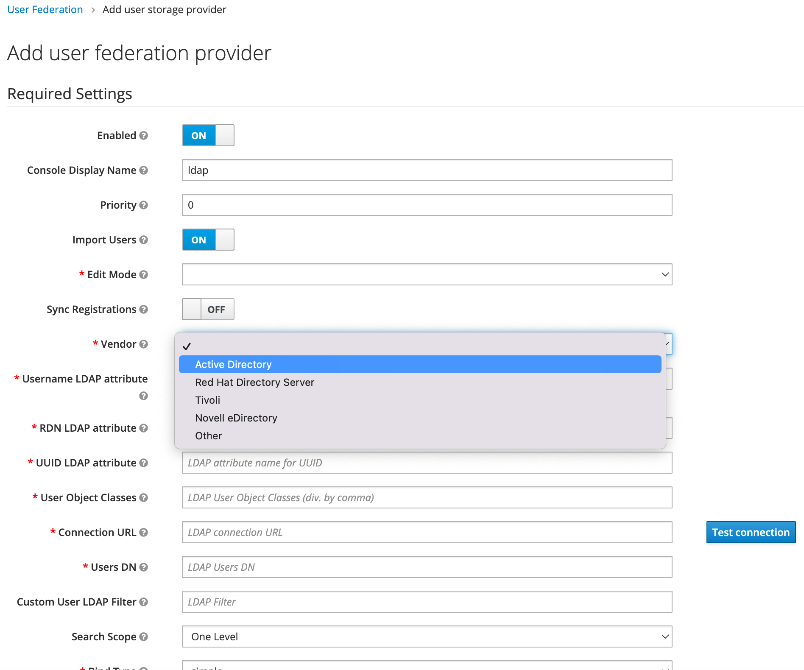

Tutorial: How to integrate Keycloak with AD/LDAP?
Keycloak allows user federation with AD/LDAP. This guide walks you through the user federation with OpenLDAP service. For more information, see User Federation from the Keycloak documentation.
Keycloak supports multiple LDAP services including Microsoft AD and OpenLDAP. The following tutorial will run an OpenLDAP service in the same VPC with the Keycloak service.
Prerequisites
You have already deployed the solution via CloudFormation or AWS CDK and already successfully logged in to the Keycload dashboard as Keycloak admin user.
Steps
Step 1. Launch an EC2 instance for OpenLDAP
Step 3. Create a User Federation on Keycloak
Step 4. Validate the user federation
Step 1. Launch an EC2 instance for OpenLDAP
You need to launch an EC2 instance in the same VPC with your Keycloak service, and do the following to configure the security group of this EC2 instance and ensure all traffic from the VPC CIDR can access its LDAP port (TCP 389).
-
Log in to the Amazon EC2 console.
-
In the left navigation pane, choose Security Groups.
-
Enter
KeyCloakKeyCloakContainerin the Filter box, and click Enter, then copy the Security group ID, such as sg-0121f1140bbfd72c6. -
Choose the Security Groups where your EC2 instance is located, and add an Inbound rules to allow ECS access to OpenLDAP.
-
Choose Save rules.
Step 2. Install OpenLDAP
Install OpenLDAP with Docker in your EC2 instance.
- Connect to your instance.
-
Do the following:
# Install docker yum install -y docker systemctl start docker # start the docker container docker run -p 389:1389 public.ecr.aws/bitnami/openldap:latest -
Open another terminal and install the OpenLDAP clients.
For example:# install ldap client yum install -y openldap-clients # list all users ldapsearch -x -b "ou=users,dc=example,dc=org" -H ldap://<EC2_PRIVATE_IP>[root@xxxx ~]# ldapsearch -x -b "ou=users,dc=example,dc=org" -H ldap://<EC2_PRIVATE_IP> # extended LDIF # # LDAPv3 # base <ou=users,dc=example,dc=org> with scope subtree # filter: (objectclass=*) # requesting: ALL # # users, example.org dn: ou=users,dc=example,dc=org objectClass: organizationalUnit ou: users # user01, users, example.org dn: cn=user01,ou=users,dc=example,dc=org cn: User1 cn: user01 sn: Bar1 objectClass: inetOrgPerson objectClass: posixAccount objectClass: shadowAccount userPassword:: Yml0bmFtaTE= uid: user01 uidNumber: 1000 gidNumber: 1000 homeDirectory: /home/user01 # user02, users, example.org dn: cn=user02,ou=users,dc=example,dc=org cn: User2 cn: user02 sn: Bar2 objectClass: inetOrgPerson objectClass: posixAccount objectClass: shadowAccount userPassword:: Yml0bmFtaTI= uid: user02 uidNumber: 1001 gidNumber: 1001 homeDirectory: /home/user02 # readers, users, example.org dn: cn=readers,ou=users,dc=example,dc=org cn: readers objectClass: groupOfNames member: cn=user01,ou=users,dc=example,dc=org member: cn=user02,ou=users,dc=example,dc=org # search result search: 2 result: 0 Success # numResponses: 5 # numEntries: 4
Now your default LDAP service is ready.
Step 3. Create a User Federation on Keycloak
-
Log in to the Keycloak dashboard as Keycloak admin user.
-
In the left navigation pane, choose User Federation.
-
Click the Add provider drop-down menu, and choose ldap.
-
In the page that opens, enter the following information:
- Edit Mode: Choose
WRITABLE. - Vendor: Choose
Other. - Username LDAP attribute: Enter your LDAP attribute name for username, use
cnin this tutorial. - RDN LDAP attribute: Enter your LDAP attribute name for user RDN, use
cnin this tutorial. - UUID LDAP attribute: Enter your LDAP attribute name for UUID, use
uidin this tutorial. - User Object Classes: Enter your LDAP User Object Classes, use
inetOrgPerson, posixAccount, shadowAccountin this tutorial. - Connection URL: Enter your LDAP connection URL, use
ldap://<EC2_PRIVATE_IP>in this tutorial, and click Test connection, Prompt the following information "Success! LDAP connection successful.". - Users DN: Enter your LDAP Users DN, use
ou=users,dc=example,dc=orgin this tutorial. - Bind Type: Choose
simple. - Bind DN: Enter your LDAP bind DN, use
cn=admin,dc=example,dc=orgin this tutorial. - Bind Credential: Enter your LDAP Bind Credentials, use
adminpasswordin this tutorial, and clickTest authentication, Prompt the following information "Success! LDAP authentication successful.".
- Edit Mode: Choose
-
Choose Save.
-
Choose Synchronize all users. The following information prompts "Success! Sync of users finished successfully. 2 imported users, 0 updated users".
-
In the left navigation pane, choose Users.
-
Choose View all users, user1 and user2 should be imported successfully.
Step 4. Validate the User federation
Now you can validate the User Federation with the account-console login.
-
Log in to the Keycloak dashboard as Keycloak admin user.
-
In the left navigation pane, choose Clients.
-
Click the Base URL of account-console.
-
On the Keycloak account console you have been redirected, click Sign In in the upper right corner.
-
Enter user1 to Username or email, enter bitnami1 to Password.
-
Click Sign In to login to the console.
FAQ
1. Does Keycloak support LDAPS protocol?
Yes. both ldap:// and ldaps:// are supported. To enable ldaps://, make sure your AD/LDAP is running with LDAPS and has properly imported the certificate.
2. What vendor type should I select if I am running Microsoft AD server?
Select Active Directory from the Vendor list.
